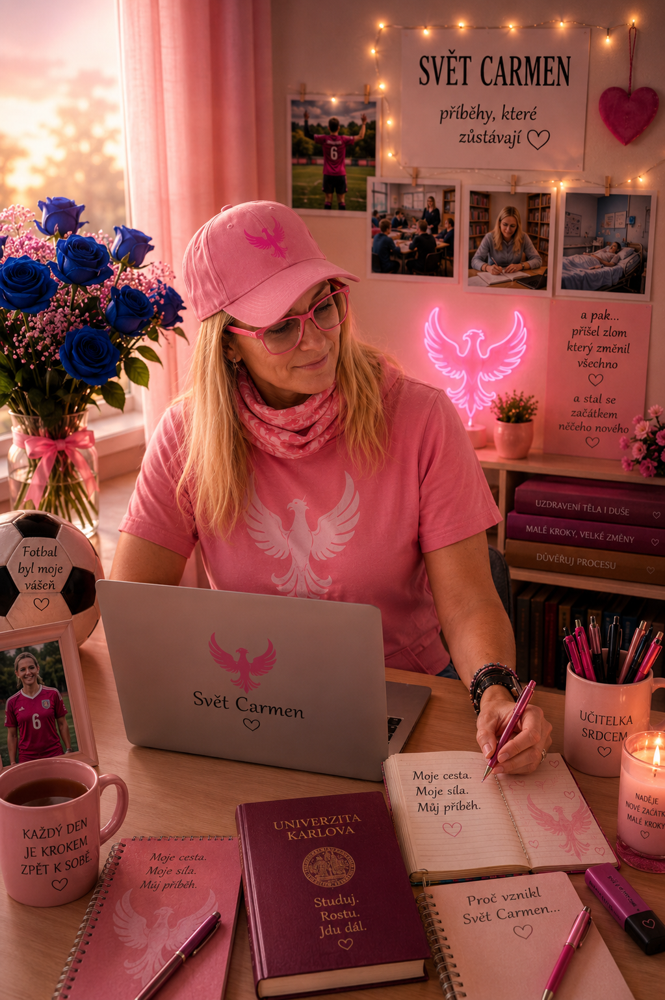

Proč vznikl
Svět Carmen
🌸 Sen psát knihy
Odjakživa jsem snila o tom, že jednou budu psát knihy. Ten sen ve mně zůstával, i když na něj dlouho nezbýval čas.
🐾 Mia a Čestmírek
První příběhy vznikaly díky Mie, mé sibiřské husky, a později také díky Čestmírkovi. Oba byli důležitou součástí mého života a dodnes mi neskutečně chybí.
👩🏫 Učitelka a studentka
Stále pracuji jako učitelka a zároveň studuji na Karlově univerzitě. Děti, škola, studium a každodenní povinnosti mi nechávaly jen málo času na psaní.

Fotbal a zlom
⚽ Na hřišti jsem nechala srdce
Sport byl vždy velkou součástí mého života. Nejvíc fotbal. Na fotbalovém hřišti jsem nechala srdce a nikdy jsem se nebála bojovat až do konce.
💥 Den, který všechno změnil
Dne 31. března 2026 jsem při hodině tělesné výchovy, když jsem dětem ukazovala trojskok z místa, utrpěla pracovní úraz.
🩺 Najednou jsem musela zastavit
Následovala diagnóza prasklého menisku a poškozených postranních vazů. Ocitla jsem se na pracovní neschopnosti a čekala mě operace.
Život se na chvíli zastavil
Člověk, který byl celý život v pohybu, dostal čas, který si nikdy neplánoval. Bolest a nejistota přinesly pauzu — ale právě v ní se otevřel prostor pro něco nového.
Někdy nás život zastaví, abychom si všimli cesty, kterou jsme dlouho odkládali.
Zrod Světa Carmen
✍️ Návrat ke starému snu
Právě tehdy jsem se znovu vrátila ke svému dávnému snu. Začala jsem tvořit komiks o Mie a Čestmírkovi.
💻 Příběhy neměly zůstat schované
Postupně jsem zjistila, jak složité může být dostat vlastní knihy mezi čtenáře. Nechtěla jsem, aby mé příběhy zůstaly schované v počítači. Chtěla jsem, aby je lidé mohli číst hned.
🌍 A tak vznikl Svět Carmen
Místo pro knihy, komiksy, skutečné příběhy a druhé začátky. Místo, kde každý příběh začíná srdcem.
⭐ Můj malý krok
Místo abych svůj sen znovu odložila, začala jsem psát, tvořit a stavět místo, kde mohou mé příběhy skutečně žít.
Jak jsem se cítila
Když přišel úraz, cítila jsem bolest, zklamání a nejistotu. Zároveň se ale v tom nečekaném zastavení otevřel prostor pro něco, co jsem si dlouho přála.
Někdy nás život zastaví, abychom konečně vykročili směrem ke svému snu.